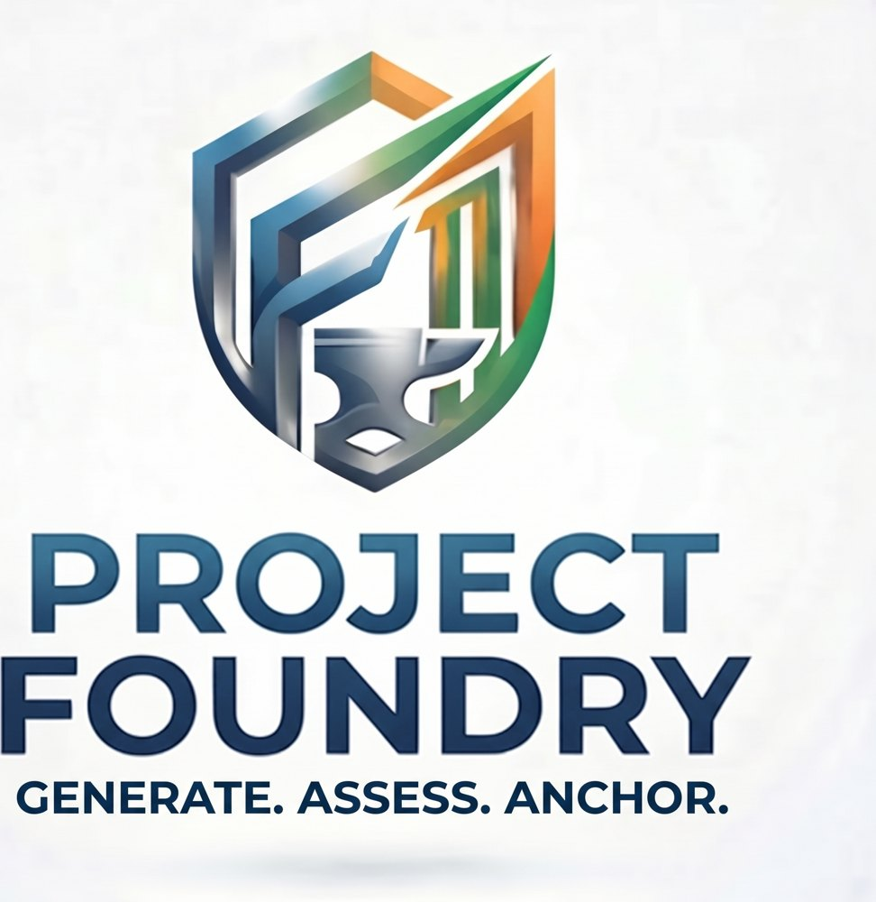

The calendar points at the section in progress. The sections are the work already decided; the dates are the only thing this page adds.
Working days are Monday to Saturday. Progress is streamed on twitch.tv/q2computing on working days, from the Arbitrum Stylus competition through the weeks after it. The record of what each day produced is the portal's analysis table and the commits in the repository, both of which outlast the stream.
Each day lists the letters of the sections it belongs to, and each section below lists the days it is performed on. Both directions link. Today is outlined. Sundays are rest days. The window of the Arbitrum Stylus competition closes on the marked day.
The automation runs the RTL to GDSII pipeline on each component and marks it complete only when every automation test and the external conformance suites pass. The human verifiers sign off against the specification, and the final signoff authorizes any on-chain step. Certificates and their timings land in the portal's analysis records, which is also the measured cost record, and the public catalog is re-exported from those records. September 28: the proven standard-cell basis grew from 4 cells to 65, every drive strength the PDK provides for 23 families, each proved over its full input space; the catalog lists 124 blocks.
Square root, conversions, rounding to integral, and classification each take one 32-bit input, so the whole space of 4.3 billion cases is enumerated on the board and compared, by digest, with Berkeley SoftFloat. A complete run is a level-1 proof that the block refines IEEE 754, with SoftFloat and the bitstream toolchain named as what it trusts. The rounding decision and the special cases of the wide operations are enumerated the same week.
Done September 28: eighteen theorems under the Lean kernel, axioms at most Quot.sound, published in the repository and rebuilt by the pipeline on every push. The ladder row reads Proven for combinational blocks; the fidelity argument is stated on the research page.
The build server runs the bootstrap and registers its runner; the portal instance comes up from the pinned commit; the three contracts deploy to Arbitrum Sepolia inside the reviewer-gated environment and their addresses are recorded by pull request. Each step waits on its human prerequisite.
Sunday, October 4, 2026. What exists on that day is what is judged: the certificates produced, the theorems checked, the contracts validated, and the record on this site.
The exact stage composes from proven adders; the rounding stage and the special cases are level-1 enumerations from week one; the Lean theorem that exact-then-correctly-rounded equals correctly-rounded is the level-4 glue. The certificate reads: level 4, composed from proven children, refines IEEE 754, trusts SoftFloat and the solver.
The same theorem for blocks with registers, over input sequences and state. On review the row moves to Proven for clocked blocks.
Wallet connection in the browser, publish a certificate from a card behind the three-level gate, then license purchase, disclosure, consume, and withdraw against the deployed addresses.